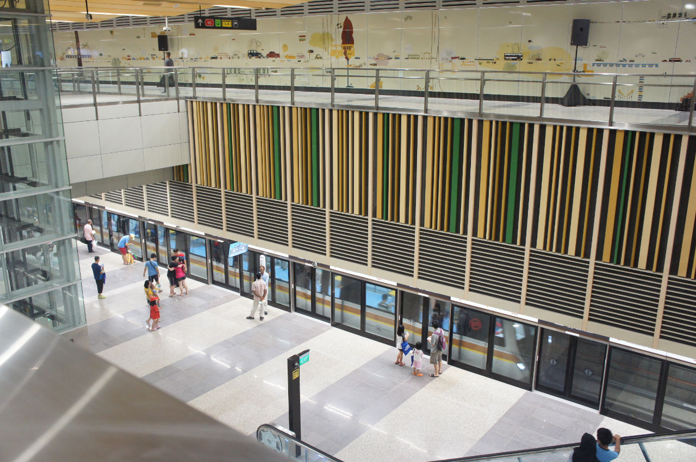
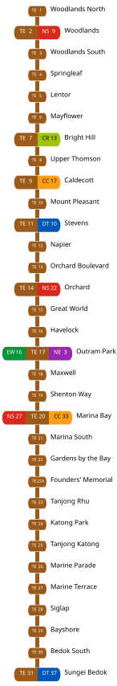

thomson-east coast line: journeys to the east



The completion of the Thomson-East Coast Line (TEL) Stage 4 marks a massive milestone for commuters along Singapore's eastern corridor. By connecting residential neighbourhoods like Marine Parade, Siglap, and Tanjong Rhu directly to the CBD and Orchard Road, the TEL completely removes the need for tedious multi-bus transfers.
Beyond slashing travel times, the TEL drastically improves network resilience by providing alternative routes for commuters. With interchanges connecting seamlessly to the East-West Line, North-South Line, Downtown Line and Circle Line, a single breakdown or delay on one line will no longer paralyze an entire journey. Commuters now have the flexibility to dynamically reroute their trips entirely underground.
households within a 10-min walk of a TEL station
total length of the fully completed line stretching across Singapore
what took 40 minutes now takes
half the travel time!